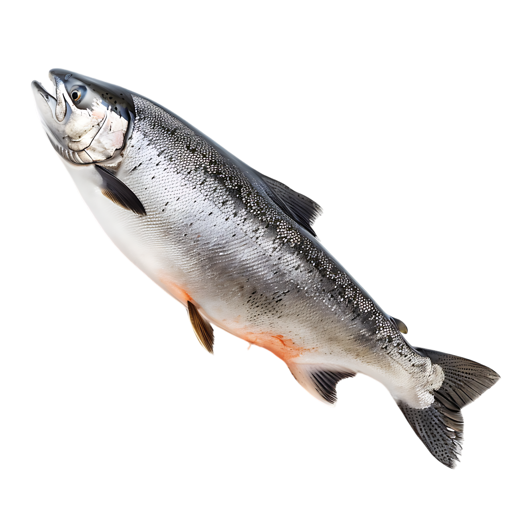

Back to the Aquarium!
tuna
salmon
squid
Salmon
Salmon (/ˈsæmən/; pl.: salmon) are any of several commercially important
species of euryhaline ray-finned fish from the genera Salmo and Oncorhynchus
of the family Salmonidae, native to tributaries of the North Atlantic (Salmo)
and North Pacific (Oncorhynchus) basins. Salmon is a colloquial or common name
used for fish in this group, but is not a scientific name. Other closely related
fish in the same family include trout, char, grayling, whitefish, lenok and taimen,
all coldwater fish of the subarctic and cooler temperate regions with some sporadic
endorheic populations in Central Asia.
